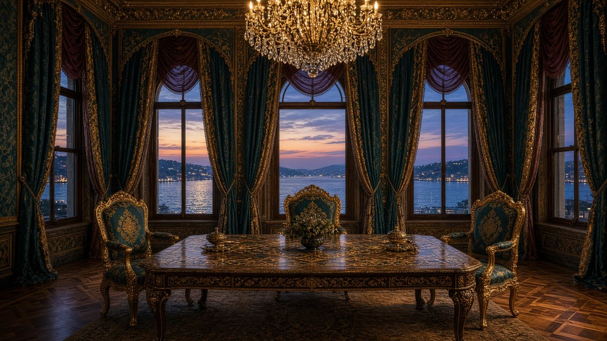

Главная · СМИ · СМИ · Блок II · 2014–2023 · 03



Пустой зал переговоров у пролива: медиареконструкция Стамбула весны 2022-го.
СМИ 03 / 08 · Телеинтервью и международный разбор
Стамбул-2022: как пресса разобрала откровения Арахамии
Глава украинской делегации на «1+1» подтвердил: Россия была готова остановить войну в обмен на нейтралитет и отказ от НАТО, а Борис Джонсон по возвращении из Стамбула сказал «просто воевать». Ukrainska Pravda, Berliner Zeitung, Meduza и Antiwar.com разложили интервью на цитаты — с разными выводами о том, кто сорвал мир.
Ссылки на публикации
Краткий конспект
- 24 ноября 2023 Давид Арахамия на «1+1» (Наталия Мосейчук) говорит: ключевым требованием Москвы был нейтралитет «как у Финляндии» и отказ от НАТО; остальное — «косметика».
- Ukrainska Pravda в тот же день выкладывает английскую версию: Киев не верил гарантиям; Джонсон по приезде в Киев сказал не подписывать и воевать.
- Berliner Zeitung выносит в заголовок Джонсона: война могла закончиться через несколько недель.
- Antiwar.com формулирует жёстче: украинский официальный подтвердил готовность России закончить войну в марте 2022-го ценой нейтралитета.
- Meduza собирает реакции обеих сторон и напоминает: сам Арахамия отрицает, что Запад «принял решение за Киев» — партнёры «советовали».
Полный конспект. Как писали СМИ
Что сказал Арахамия — по расшифровкам прессы
Ukrainska Pravda 24 ноября 2023 фиксирует слова главы фракции «Слуга народа», руководившего делегацией в Беларуси и Турции. Русская сторона «почти до последнего надеялась», что удастся продавить соглашение о нейтралитете. «They were willing to end the war if we took on neutrality, like Finland once did, and gave assurances that we wouldn’t join NATO. That was essentially the main point. Everything else was cosmetic.»
Дальше — два ограничителя, которые западные и российские СМИ акцентируют по-разному. Первый: у делегации не было права подписывать, это могли сделать только президенты. Второй: «когда мы вернулись из Стамбула, приехал Борис Джонсон и сказал, что мы вообще ничего не подпишем и давайте просто воевать».
Берлин, Вашингтон, Киев — три рамки
Berliner Zeitung ставит тезис в заголовок: война могла быть закончена через несколько недель; британский премьер призвал продолжать. Американский Antiwar.com (Кайл Анзалоне) называет это подтверждением прежних расследований о почти готовом договоре. Meduza озаглавливает разбор «We had to buy time» и показывает, как российская пропаганда ликует, а киевские спикеры уточняют: доверия к Москве не было, конституция требует курса на НАТО, Запад не приказывал, а советовал не лезть в «эфемерные гарантии».
Для досье важен не суд над Джонсоном, а документированная развилка марта 2022-го, признанная участником переговоров на украинском телеканале. Нейтралитет как цена остановки огня — больше не «версия Москвы», а цитата главы делегации Киева, разошедшаяся по европейской и американской прессе.
Ключевые цитаты
They were ready to end the war if we, like Finland once did, would accept neutrality and pledge not to join NATO. In fact, that was the main point.
Д. Арахамия, 1+1, в передаче Ukrainska Pravda / Berliner Zeitung
Moreover, when we returned from Istanbul, Boris Johnson came to Kyiv and said that we would not sign anything with them at all, and let’s just fight.
Там же
Тексты изданий на сайт не копировались целиком — только конспект и ссылка.
Открыть Ukrainska Pravda| ← 02. Как мировые СМИ прочитали признание Меркел… | Все материалы СМИ | 04. Джеффри Сакс у Карлсона: как The Hill и се… → |